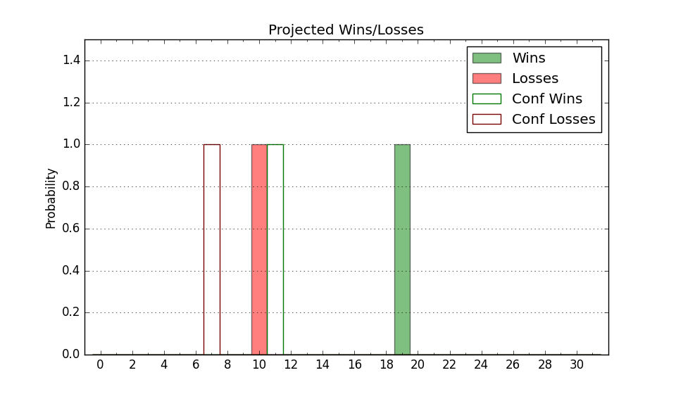

| Home | Game Probabilities | Conferences | Preseason Predictions | Odds Charts | NCAA Tournament |
| City: | Kent, Ohio | |
| Conference: | Mid-American (3rd)
| |
| Record: | 11-7 (Conf) 19-10 (Overall) | |
| Ratings: | Comp.: 2.1 (143rd) Net: 2.1 (143rd) Off: 105.1 (195th) Def: 103.0 (105th) SoR: 0.0 (117th) |
| Remaining | ||||||
|---|---|---|---|---|---|---|
| Date | Opponent | Win Prob | Pred. | |||
| 3/13 | (N) Western Michigan (298) | 81.3% | W 74-64 | |||
| Previous | Game Score | |||||
| Date | Opponent | Win Prob | Result | Off | Def | Net |
| 11/4 | @Louisiana Lafayette (329) | 77.7% | W 70-66 | -3.2 | -6.6 | -9.8 |
| 11/13 | @Auburn (2) | 1.0% | L 56-79 | -0.3 | 7.7 | 7.4 |
| 11/21 | Niagara (332) | 92.8% | W 76-73 | 1.3 | -13.4 | -12.1 |
| 11/23 | @Cleveland St. (186) | 45.0% | W 68-52 | 7.1 | 22.1 | 29.1 |
| 11/28 | (N) Towson (159) | 54.4% | W 65-54 | -1.0 | 7.8 | 6.8 |
| 11/29 | (N) UC Irvine (69) | 23.6% | L 39-51 | -30.5 | 21.4 | -9.1 |
| 11/30 | (N) Kennesaw St. (149) | 52.3% | W 67-60 | -5.4 | 16.5 | 11.1 |
| 12/6 | Portland (275) | 86.9% | W 76-57 | -3.7 | 4.3 | 0.5 |
| 12/15 | Mercyhurst (340) | 93.6% | W 82-57 | 8.0 | 3.6 | 11.7 |
| 12/22 | @Alabama (6) | 2.1% | L 54-81 | -19.0 | 20.3 | 1.3 |
| 1/4 | Ball St. (274) | 86.9% | L 67-75 | -23.5 | -5.6 | -29.1 |
| 1/7 | @Northern Illinois (355) | 86.9% | W 68-50 | -11.7 | 20.7 | 9.0 |
| 1/10 | @Buffalo (347) | 83.2% | W 68-49 | -9.9 | 21.9 | 12.0 |
| 1/14 | Western Michigan (298) | 88.9% | L 83-94 | -2.2 | -38.2 | -40.4 |
| 1/18 | Miami OH (185) | 73.3% | L 61-70 | -13.4 | -13.2 | -26.6 |
| 1/21 | @Toledo (248) | 59.8% | W 83-64 | 16.9 | 4.1 | 20.9 |
| 1/24 | @Ohio (191) | 46.0% | L 59-61 | -17.8 | 15.6 | -2.2 |
| 1/28 | Bowling Green (285) | 87.7% | W 75-57 | 2.4 | 6.5 | 8.9 |
| 1/31 | Akron (121) | 60.1% | L 71-85 | -9.2 | -14.9 | -24.1 |
| 2/4 | @Eastern Michigan (293) | 69.2% | W 70-49 | -11.4 | 30.9 | 19.5 |
| 2/8 | Arkansas St. (94) | 49.9% | W 76-75 | 10.1 | -4.4 | 5.7 |
| 2/11 | Central Michigan (219) | 78.6% | W 91-83 | 28.1 | -29.2 | -1.1 |
| 2/14 | Ohio (191) | 74.4% | W 76-75 | 7.7 | -15.9 | -8.1 |
| 2/18 | @Bowling Green (285) | 67.7% | W 91-84 | 20.6 | -22.0 | -1.4 |
| 2/21 | @Miami OH (185) | 44.7% | L 92-96 | 15.5 | -17.2 | -1.6 |
| 2/25 | Toledo (248) | 83.5% | W 105-65 | 33.7 | 8.4 | 42.2 |
| 2/28 | @Akron (121) | 30.7% | L 72-77 | 5.8 | -2.8 | 3.0 |
| 3/4 | @Western Michigan (298) | 70.1% | W 77-76 | 6.6 | -11.2 | -4.7 |
| 3/7 | Eastern Michigan (293) | 88.4% | W 76-70 | 0.3 | -12.9 | -12.6 |
| Stats & Trends | |||||
|---|---|---|---|---|---|
| Current | Day | Week | Month | Season | |
| Composite | 2.1 | -0.4 | -0.6 | +0.9 | -1.9 |
| Comp Rank | 143 | -5 | -8 | +12 | -27 |
| Net Efficiency | 2.1 | -0.4 | -0.6 | +1.0 | -- |
| Net Rank | 143 | -5 | -8 | +13 | -- |
| Off Efficiency | 105.1 | -0.0 | +0.2 | +6.6 | -- |
| Off Rank | 195 | -1 | -1 | +99 | -- |
| Def Efficiency | 103.0 | -0.4 | -0.8 | -5.6 | -- |
| Def Rank | 105 | -5 | -7 | -50 | -- |
| SoS Rank | 280 | -7 | -6 | +21 | -- |
| Exp. Wins | 19.0 | +0.1 | +0.1 | +1.3 | +0.0 |
| Exp. Conf Wins | 11.0 | +0.1 | +0.1 | +0.8 | -2.6 |
| Conf Champ Prob | 0.0 | -- | -- | -0.0 | -36.9 |

| Advanced Stats | ||
|---|---|---|
| Stat | Value | Rank |
| Off Eff FG % | 0.470 | 309 |
| Off Ast Ratio | 0.128 | 293 |
| Off ORB% | 0.354 | 28 |
| Off TO Rate | 0.140 | 118 |
| Off FT Ratio | 0.293 | 286 |
| Def Eff FG % | 0.492 | 112 |
| Def Ast Ratio | 0.151 | 220 |
| Def ORB% | 0.290 | 197 |
| Def TO Rate | 0.168 | 66 |
| Def FT Ratio | 0.413 | 333 |